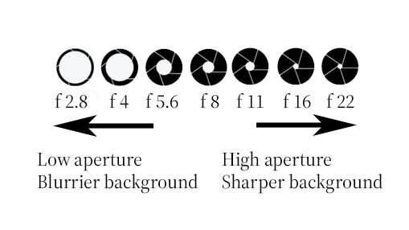
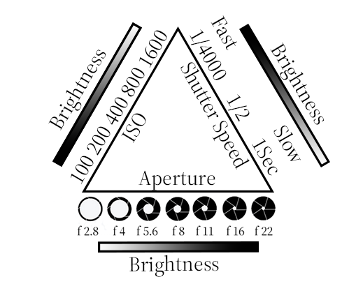

One of the most important aspects of photography is the composition. It can improve your photographs a lot
by just following a few simple rules.
The first rule to consider is the rule of thirds. The rule of thirds in photography is a guideline that places
the subject in the left,right, top or bottom third of an image,
leaving the other two thirds more open. It divides a photo into nine equal parts, split by two equally spaced
horizontal and vertical lines. As you can see
from the image below the sun and the ship are roughly a third of the way in the picture from left and right. The
horizon is roughly a third of the way up.
The image is more pleasing to the eye than if everything was in the centre.
Leading lines are lines in a shot, factual or imaginary; that lead the eye to key elements in the scene.
Photographers, artists and filmmakers all use this technique to lead the viewer's eyes through an image to the
main subject of the image.
An example of this is in the image below where the road leads the eye to the mountains in the distance, as do
the road markings and markers.
Depth of field or "bokeh" is the distance between the closest and furthest objects, that are in focus and
anything in-between.
A high depth of field would result in all of the elements of the photograph in focus. A low depth of field would
result in the background
and elements of the foreground blurred and out of focus. Typically, landscapes use a large depth of field to
make sure all of the detail is captured.
Whereas a low/shallow depth of field is usually used in portraits or wildlife to separate the subject from the
background, helping it to stand out.
In the photographs underneath, the left photo has a low/shallow depth of field with the sea eagle being in focus
and the background blurred.
The image on the right has a higher depth of field so that all the cyclists from the front rider to the back are
all in focus.
Camera Settings
Aperture
How do you achieve shallow depth of fields or get a sharp image of a moving object? You need to know what some
of the settings on your camera do.
You may have noticed on your camera's LCD screen or in the viewfinder something called the f-stop. It usually appears as a number
such as f2.9, f8, f22 etc.
This is the size of the aperture on your camera and this is one of the ways to control the depth of field. If
you notice on the image below the
lower the number the wider the aperture. This is because the f-stop is measured as a ratio. All you really need
to know is the lower the number,
the wider the aperture is, more light is let in and you get a shallow depth of field and a blurry background. If
your camera has an aperture priority
setting, you can practice changing the aperture manually, leaving the camera work out the shutter speed itself.

Shutter speed
Shutter speed is a measure of how long your camera shutter stays open. When the shutter opens it fully
exposes the camera sensor to
to the light that is entering through the lens. The shutter then closes and stops the light from hitting the
sensor. Fast shutter speeds are
typically used to capture fast moving objects and freeze motion. Long shutter speeds are generally used in low light
and sometimes used to intentionally blur moving objects like rivers and waterfalls to create a sense of motion. Any movement when
using a long shutter speed will
cause unwanted movement in the picture, so a tripod is nearly always used. In the images below the left image of
the lightning bolt was taken
with an extra long shutter speed of 30 seconds. The image on the right of the swan was taken with a fast shutter
speed (1/4000th of a second) to freeze the motion of the
bird flapping its wings.
ISO is in its most basic form is a setting that will brighten or darken your picture. At its highest settings the image will be brighter
which is useful in darker environments. There is a downfall to this as the higher the ISO, the more the image will show a lot of grain
or noise. This affects the quality of the image and also hinders your ability to crop and enlarge the image. In the image of the crow
below there is a lot of noise in the image as the light was low and a high ISO was used.
All of the three previously mentioned variables, aperture, shutter speed and ISO control how the camera captures light.
The exposure triangle shown below shows how they interact with each other and shows how you must balance the three aspects
to create the perfectly exposed picture. For example if the aperture was f22 you can see from the brightness bar underneath that it will
result in a dark image. You'd have to make the ISO higher and or the shutter speed slow to compensate.

Thank you for reading and remember to avoid being overexposed.